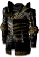

Set
Griswold's Legacy
4 items, level 80, Paladin

Griswold's Valor
Corona
Defense: 111-165
Required Level: 69
+50-100% Enhanced Defense
+50-100% Enhanced Weapon Damage
Requirements Increased By -25%
+20-30% Chance Items Roll Magic or Better
Socketed (2-4)
(2 items) +2 to Offensive Auras
(3 items) +50 to Life

Griswold's Heart
Ornate Plate
Defense: 417-450
Required Level: 45
+500 Defense
+2 to Paladin Skill Levels
+10-20% to Strength
Requirements Increased By -25%
Socketed (2-4)
(2 items) +20% Faster Hit Recovery
(3 items) +50 to Life

Griswold's Redemption
Caduceus
Damage: 37-43
Required Level: 80
+200-300% Enhanced Weapon Damage
+40% Increased Attack Speed
+200% Damage to Undead
-10 to -20% to Enemy Physical Damage Resistance
+3-5 to Sacrifice (class only)
(2 items) +X to Maximum Weapon Damage (X = 1.5 x character level)
(3 items) +25% Deadly Strike
(4 items) Adds 20-40 Damage

Griswold's Honor
Vortex Shield
Defense: 182-225
Chance to Block: 19%
Required Level: 68
+100-150 Defense
+100-150% Enhanced Weapon Damage
+50% Faster Block Rate
20% Increased Chance of Blocking
Socketed (2-4)
(2 items) +30% to All Resistances
(3 items) -10% to Enemy Physical Damage Resistance
Set bonuses
- 2 items: +30 to Strength
- 3 items: +30 to Dexterity
Full set
- +50% to All Resistances
- +3 to Paladin Skill Levels
- +200 to Attack Rating
- +200 to Life
- +25% Deadly Strike
- +30% Faster Hit Recovery